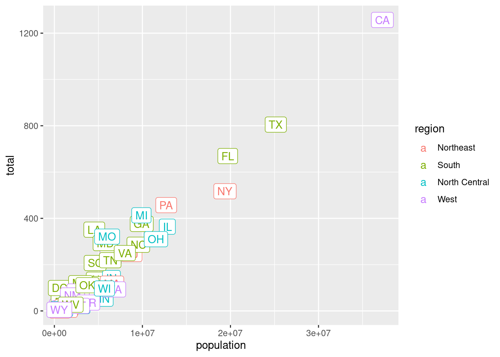
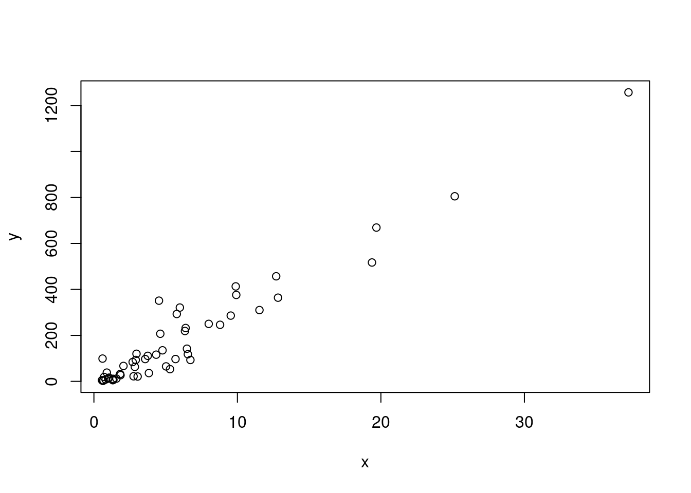
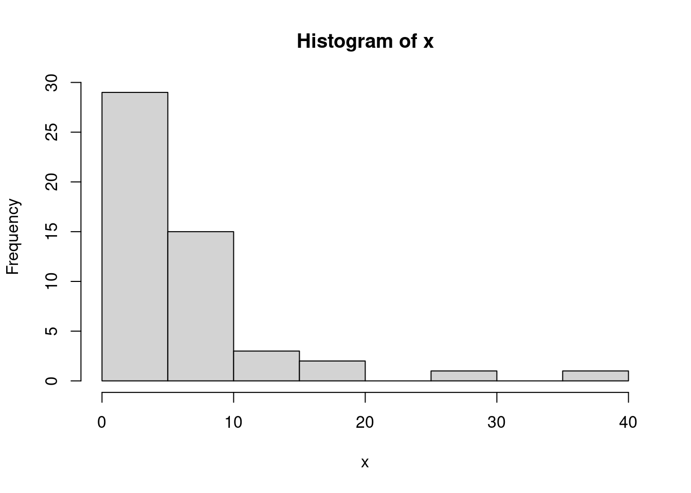
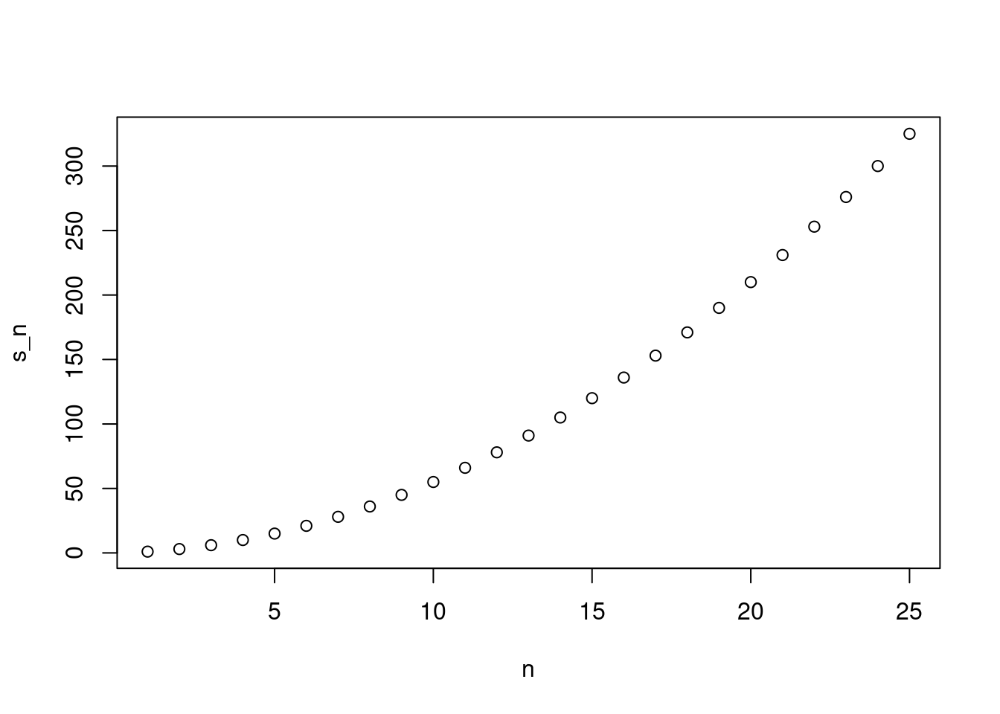

Topic 7 Statistical Programming
We will learn a lot more about statistical programming this semester, but we’ll start with a crash course on R with the idea of getting you up-and-running.
I listed a few references in the Introduction, but this section will mostly follow the discussion in Introduction to Data Science: Data Analysis and Prediction Algorithms with R, by Rafael Irizarry. I’ll abbreviate this reference as IDS throughout this section.
IDS is not specifically geared towards Econometrics, but I think it is a really fantastic book and resource. In this section, I point you to the references for the material that I cover in class, but I would strongly recommend reading all of the first 5 chapters of IDS over the next couple of weeks. We will basically only cover the first 5 chapters in our class, but the course should set you up so that the remaining 35 chapters of the book can serve as helpful reference material throughout the rest of the semester.
7.1 What is R?
Statistical programming language
- => looks like a “real” programming language
- => lots of statistical things are easy to do
Popular among statisticians, computer scientists, economists
Other popular alternatives
- Python
- Stata
Easy to share code across platforms: Linux, Windows, Mac
Large community; lots of helpful resources on StackOverflow, etc.
- First place to look if you don’t know how to do something: DuckDuckGo (or…err…Google)!
Easy to write and contribute extensions.
- I have 7 (?) R packages that you can easily download and immediately use
7.2 Downloading R
We will use R (https://www.r-project.org/) to analyze data. R is freely available and available across platforms. You should go ahead and download R for your personal computer as soon as possible — this should be relatively straightforward. It is also available at most computer labs on campus.
7.3 RStudio
Base R comes with a lightweight development environment (i.e., a place to write and execute code), but most folks prefer RStudio as it has more features. You can download it here: ; choose the free version based on your operating system (Windows, Mac, etc.).
7.4 RStudio Development Environment
IDS 1.4
For the course we’ll use RStudio
But others possibilities are out there; I mostly use emacs on my own
RStudio panes:
- Code Editor
Console
Environment/History
Other panes
File -> New R script
Save R Script
- Code Editor
7.5 Installing R Packages
IDS 1.5
Extra functionality (the majority actually) comes from loading extra packages
Examples:
dslabs– the package associated with the book,tidyverse– data manipulation package (this has lots of dependencies),did– one of my packages
7.6 Running code
IDS 2.1
An example of simple plot
library(tidyverse)## ── Attaching packages ─────────────────────────────────────── tidyverse 1.3.0 ──## ✓ ggplot2 3.3.2 ✓ purrr 0.3.4
## ✓ tibble 3.1.0 ✓ dplyr 1.0.4
## ✓ tidyr 1.1.2 ✓ stringr 1.4.0
## ✓ readr 1.4.0 ✓ forcats 0.5.0## ── Conflicts ────────────────────────────────────────── tidyverse_conflicts() ──
## x dplyr::filter() masks stats::filter()
## x dplyr::lag() masks stats::lag()library(dslabs)
data(murders)
ggplot(data=murders, mapping=aes(x=population, y=total, label=abb, color=region)) +
geom_label()
- Command cheat sheet (under help)
- assignment (alt+-)
- run code (ctrl+enter)
7.7 R Basics
IDS 2.2
Example: Solving quadratic equations; “quadratic formula” if you want to solve ax^2 + bx + c = 0
- Try:
a <- 2
b <- 10
c <- 1Notice nothing prints, but we have created “objects” or ``variables’’ with these names
to print the value of the variables, try
a## [1] 2or
print(a)## [1] 27.8 Workspace
IDS 2.2
- You can see all objects currently available in the workspace by the command
ls()## [1] "a" "b" "c" "murders"alternatively, just look in the
environmenttabIf you try to access an object not available in the workspace, you will get an error
x## Error in eval(expr, envir, enclos): object 'x' not found7.9 Solving the quadratic equation
IDS 2.2
(-b + sqrt(b^2 - 4*a*c)) / (2*a)## [1] -0.1020842(-b - sqrt(b^2 - 4*a*c)) / (2*a)## [1] -4.897916Write a function to do this
7.10 Functions in R
IDS 2.2
log(8)## [1] 2.079442log(8, base=10) # optional argument## [1] 0.90309log(base=10, x=8) # change order if name arguments## [1] 0.90309?logPractice:
- What is the sum of the first 100 positive integers? The formula for the sum of integers 1 through n is n(n+1)/2. Define n=100 and then use R to compute the sum of 1 through 100 using the formula. What is the sum?
7.11 Data types
IDS 2.4
we often need to tell the difference between vectors of numbers, tables of numbers, character strings, and more complex data types
data.frame
- useful functions:
head, the accessor$
- useful functions:
vector
- types: numeric, character, logical, factors (categorical variables)
matrix
- create one
- show relationship with data.frame
list
- complicated data structure that can combine these
creating vectors
- use
ccommand (stands for concatenate) - create sequences
- subset of vector, single and group
NA= not available, missing data- max function
- order, sort functions
- use
7.12 Vector arithmetic
IDS 2.11
- multiply vector by constant
- add or subtract vector by constant
- same operations on two vectors of equal length
7.13 Subsetting with logicals
IDS 2.13
murder_rate <- murders$total / murders$population * 100000
ind <- murder_rate < 0.71
murders$state[ind]## [1] "Hawaii" "Iowa" "New Hampshire" "North Dakota"
## [5] "Vermont"sum(ind)## [1] 57.14 Logicals
IDS 2.13
- TRUE and FALSE, &, ==, <=
7.15 %in%
IDS 2.13
- %in% finds all an element of first vector is in 2nd vector
c(1,2,3) %in% c(3,4,5)## [1] FALSE FALSE TRUE7.16 Basic Plots
IDS 2.15
x <- murders$population / 10^6
y <- murders$total
plot(x, y)
hist(x)
7.17 Programming basics
7.18 if/else
IDS 3.1
ind <- which.min(murder_rate)
if(murder_rate[ind] < 0.5){
print(murders$state[ind])
} else{
print("No state has murder rate that low")
}## [1] "Vermont"- any, all
7.19 Writing functions
IDS 3.2
Excercise: Write a function for solving quadratic equation
7.20 for loops
IDS 3.4
- compute sum of series 1 to n
compute_s_n <- function(n){
x <- 1:n
sum(x)
}
m <- 25
s_n <- vector(length = m) # create an empty vector
for(n in 1:m){
s_n[n] <- compute_s_n(n)
}
n <- 1:m
plot(n, s_n)
7.21 Vectorization
IDS 3.5
- often preferred over for loops
n <- 1:25
compute_s_n(n) # won't work## Warning in 1:n: numerical expression has 25 elements: only the first used## [1] 1n <- 1:25
s_n <- sapply(n, compute_s_n) # R version of for loop above
s_n## [1] 1 3 6 10 15 21 28 36 45 55 66 78 91 105 120 136 153 171 190
## [20] 210 231 253 276 300 3257.22 Tidyverse
IDS Chapter 4 — strongly recommend that you read this
R has very good data clean / manipulating tools
largely won’t cover in class
7.23 Data Visualization
IDS Ch. 6-11 — R has very good data visualization tools; strongly recommend that you read this
- Another very strong point of R
- ggplot
- 538’s graphs produced with ggplot
7.24 Reproducible Research
IDS Ch. 40
Rmarkdown is a very useful way to mix code and content
File -> New Rmarkdown
Header, alternatively pdf_document
code chunks, put some of the code that we have written there
click knit
lists, italics, bold,
code, linksequations
$1+1$results in: \(1+1\); or
$$
-b \pm \sqrt{b^2 - 4ac}
$$results in
\[ -b \pm \sqrt{b^2 - 4ac} \]
- tables
| Column 1 | Column 2 | Column 3 |
| :------------- | :----------: | -----------: |
| Cell Contents | More Stuff | And Again |
| and more | and more | and more |results in
| Column 1 | Column 2 | Column 3 |
|---|---|---|
| Cell Contents | More Stuff | And Again |
| and more | and more | and more |
7.25 Technical Writing Tools
This is largely beyond the scope of the course, but, especially for students in ECON 6750, I recommend that you look up Latex. This is a markup language mainly for writing technical, academic writing. An easy way to get started here is to use the website Overleaf. This is also closely related to markdown/R-markdown discussed above (Latex tends to be somewhat more complicate which comes with some associated advantages and disadvantages).